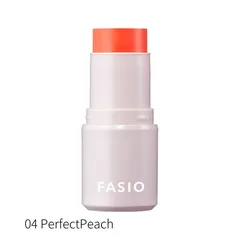

血色を一本で足したい人

FASIO
マルチフェイス スティック 04 Perfect Peach 4g
4g
¥990税込・出典掲載価格
選び方と声
- 選ぶ条件：頬・目もと・唇を1本で済ませたい人。商品ページの説明では、1本で頬・目もと・唇に使えて、ウォータープルーフ・皮脂プルーフ・タッチプルーフ。10時間化粧もちのデータあり（メーカー調べ・個人差あり）。
- ガルでは、チークとリップをこの1本にしている人（仕事中はマスクで汗をかく）や、下地のあとにさっと塗ってぼかす人がいた
気になる声気になる点：04はビビッドなオレンジ。ほかにピンクやブラウンの色もあり、色は商品ページの写真で確かめる。色の種類が少なく似合う色がない、という声もある。なじませる道具まで使うと手数は減らない
販売価格・容量・送料はリンク先でご確認ください